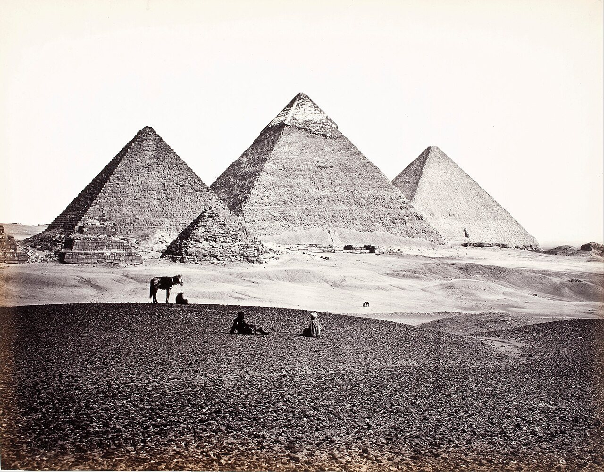
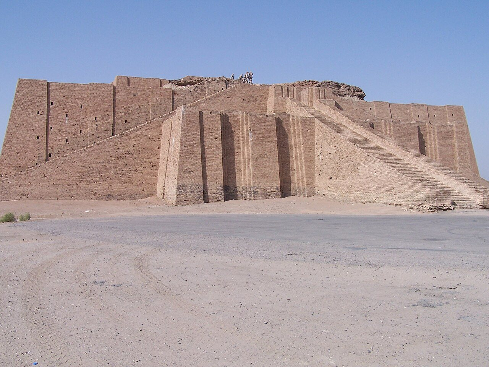
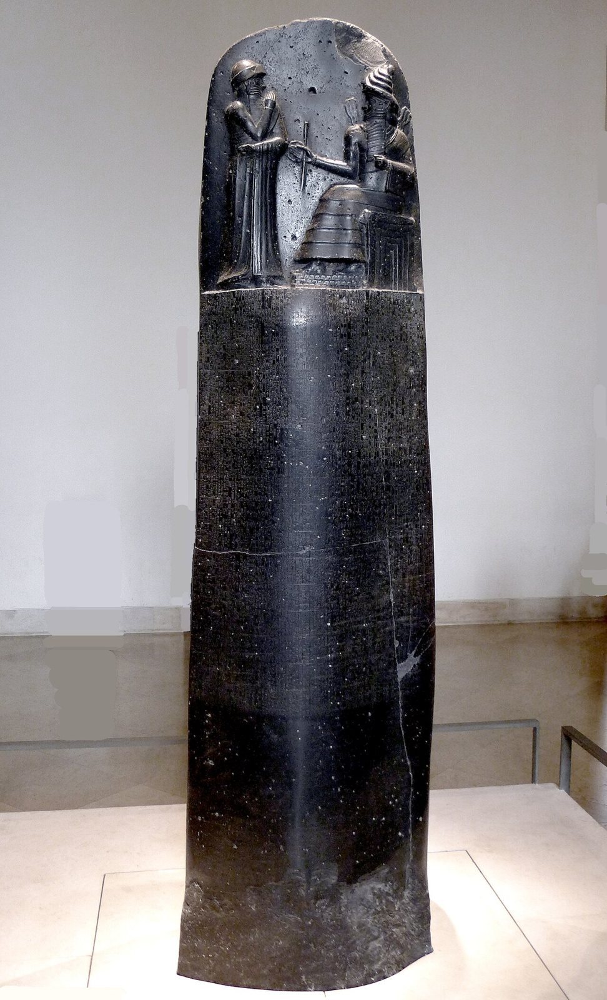
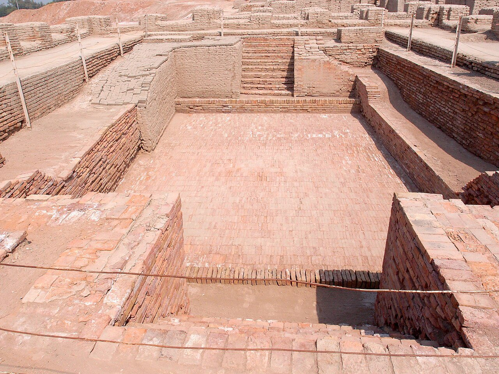
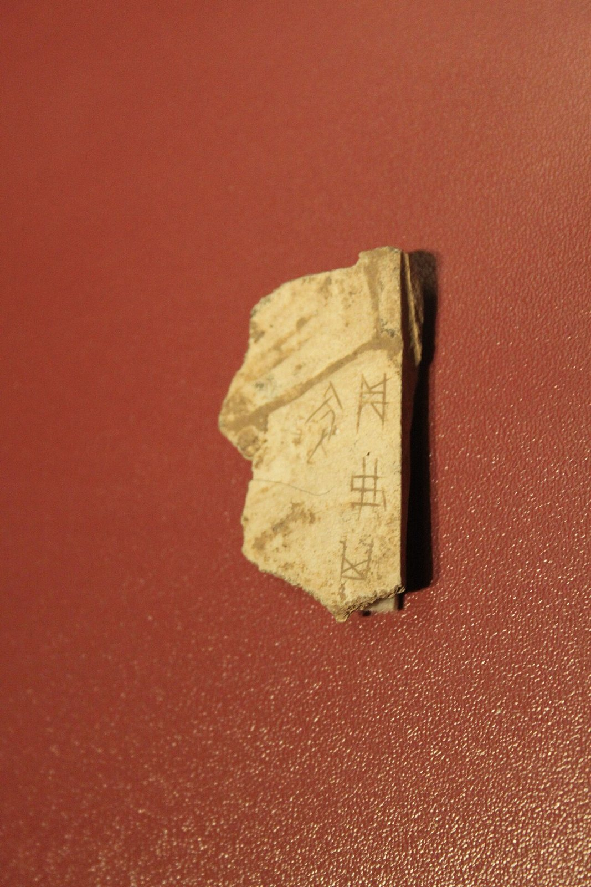

사진 · 기자의 피라미드, 1857년 무렵 사진
중학교 역사① · 2단원 문명의 발생과 고대 세계의 형성
강강가의 문명들: 4대 문명 비교
프랜시스 프리스, 기자의 피라미드(1857년 무렵) · 퍼블릭 도메인
“문명은 왜
문명은 왜
강가에서 시작되었을까?
사실티그리스·유프라테스, 나일, 인더스, 황허
해석강은 무엇을 주고, 무엇을 요구했나
확장강가가 아닌 곳의 문명은?
물관개 · 홍수
도시신전 · 성벽
문자기록 · 세금

사진 · 신을 위한
인공 산?
신을 위한
인공 산?
사실진흙 벽돌을 쌓은 계단 모양 신전
해석왜 높이 쌓았을까
확장신전을 지은 사람은 누구
우르의 지구라트 · 미 공군 기지 내 사진(Hardnfast) · CC BY 3.0

사진 · 법은
누구를 위한 것이었을까?
법은
누구를 위한 것이었을까?
누가바빌로니아의 함무라비 왕
누구에게백성과 신, 그리고 후대의 왕
사실·주장비석 위, 신 앞에 선 왕
함무라비 법전 비석 · 루브르 박물관 · 사진 Mbzt · CC BY 3.0
노예였을까,
일꾼이었을까?
사실피라미드 곁에서 발굴된 일꾼 마을
해석빵, 맥주, 그리고 무덤
확장‘노예’ 이야기는 어디에서 왔을까

사진 · 왕궁이 보이지 않는
도시?
왕궁이 보이지 않는
도시?
사실바둑판 길 · 하수도 · 대욕장
해석누가 이 도시를 설계했을까
확장아직 읽지 못한 문자
모헨조다로 대욕장 · 사진 Saqib Qayyum · CC BY-SA 3.0

사진 · 왕은 뼈에게
무엇을 물었을까?
왕은 뼈에게
무엇을 물었을까?
사실소뼈와 거북 등딱지
해석점을 치는 왕
확장한자의 조상
상(은)의 갑골 · 사진 Gary Lee Todd · CC0
처음의 글자들
쐐기 문자메소포타미아
상형 문자이집트
갑골 문자중국
인더스 문자아직 못 읽음
‘4대’ 문명?
사실안데스, 메소아메리카에도 문명
해석‘넷’은 누가 정했을까
확장강이 없어도 문명
오늘의 강
사실서울과 한강
해석지금도 강이 도시를 만들까
확장강물을 두고 다투는 나라들
“문명이 강가에서 시작된 까닭은 이다.